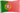

De: La Frikipedia, la enciclopedia extremadamente seria.
De: La Frikipedia, la enciclopedia extremadamente seria. De: La Frikipedia, la enciclopedia extremadamente seria.
| De la serie ciudades del mundo: | |||||
| Braga | |||||
| |||||
| Topónimo oficial | La Montaña | ||||
| País |  Portugal | ||||
| Código postal | 11811 | ||||
| Superficie | Llena de vaginas | ||||
| Altitud | 0,1 km | ||||
| Distancia | A 1 km de Ourense | ||||
| Fundación | En el 12° año de la Victoria de los celtas sobre los vikingos | ||||
| Población | Gallegos y brasileños | ||||
| Gentilicio | Vagina | ||||
| Alcalde | Penedector | ||||
| | |||||
Este artículo trata sobre la ciudad. Para la ropa interior, véase bragas.
Braga es una aldeíta del norte de Portugal, que linda con el temido IV Reich Galaico y Zamora y que fue capital del reino suevo.
Su geografía es particularísima. A pesar de su nombre, que invita a la fiesta y al parrandeo, la ciudad de Braga es mu fría y de clima cuasi polar. En sus calles podrás encontrar estalactitas donde aún se conservan restos de la Atlántida, y por el paseo fluvial encontrarás mamuts, rinocerontes lanudos, neanderthales y a Maricastaña paseando con su novio brasileño (la versión portuguesa del novio cubano joven y pobre que se aprovecha de una vieja roca infeliz).
La ciudad fue fundada por Don Manuel, un gallego listillo que reconquistó media España a los suevos prometiéndoles tierras más allá del Océano Atlántico (como al final sí que había tierras mas allá Galicia se arruinó por culpa de sus promesas de regalar fincas en América a todos los suevos).
Fueron los suevos quienes la hicieron independiente de los Reyes Católicos poniéndole unas murallas y haciendo que las portuguesas llevaran bigote para hacer creer a los espías castellanos que todo Portugal estaba habitado por hombres que hacían un ejército inmenso. Por eso Portugal no fue conquistada por Isabel la Católica pero sí por un rey gay venido de Valencia del Miño. Siglos después en ella nació Salazar, dictador de Portugal, que al igual que Franco no les regaló nada a sus paisanos.
Viven de hacer cientos de zapatos y ropa para la multinacional ZARA, metiendo también a los niños a coser y enviando a los adolescentes a España para que aprendan a construir, cavar zanjas, electrificar calles y cómo no hacer que el país se vaya al carajo.
Autor(es):